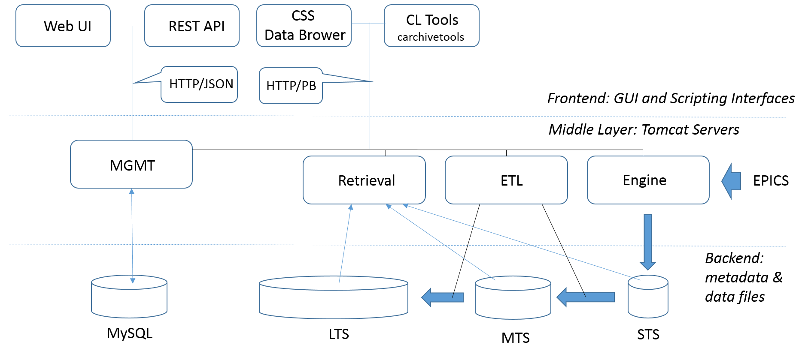

Archiver Appliance Overview¶
The EPICS Archiver Appliance is developed by Murali Shankar, SLAC. As shown in the Figure, its architecture is designed after the standard three-tier approach.
{kind=link}
The data in the bottom data layer are collected in three data stores:
- STS: short-term temporary file storage (tmpfs) implemented with the RAM disk used as an one-hour buffer
- MTS: middle-term repository of the Protocol Buffer daily files accumulated over one week (e.g. /DATA/mts)
- LTS: long-term repository of the Protocol Buffer annual files (e.g., /DATA/lts)
In addition to data files, the bottom layer includes the MySQL archappl database for maintaining the PV meta data that encompasses the PV fields (e.g., alarm limits) and archiver parameters (e.g., sampling period).
The Archiver Appliance middle layer consists of four Tomcat-based Java servers:
- Engine: establishes Channel Access monitors and then writers the data into the short term storage (STS)
- ETL (Extract, Transform, and Load): moves data from the STS to the MTS and from the MTS to the LTS
- Retrieval: gathers data from all the stores, and then stitches them together to satisfy the data retrieval requests
- MGMT: manages all the other three servers and holds the configuration state
The top layer encompasses GUI, Web, and scripting interfaces that communicate with the middle layer servers. Specifically, plots with time series are provided by the Data Browser module from the Control System Studio (CSS). Both the CSS and Python applications use the composite communication approach based on the HTTP protocol and binary Protocol Buffer messages. For the administration and configuration of the EPICS Archiver Appliance, the MGMT server exposes a set of Web service calls (business process logic) that can be accessed via Web UI or Python interface using the REST (Representational State Transfer) API.